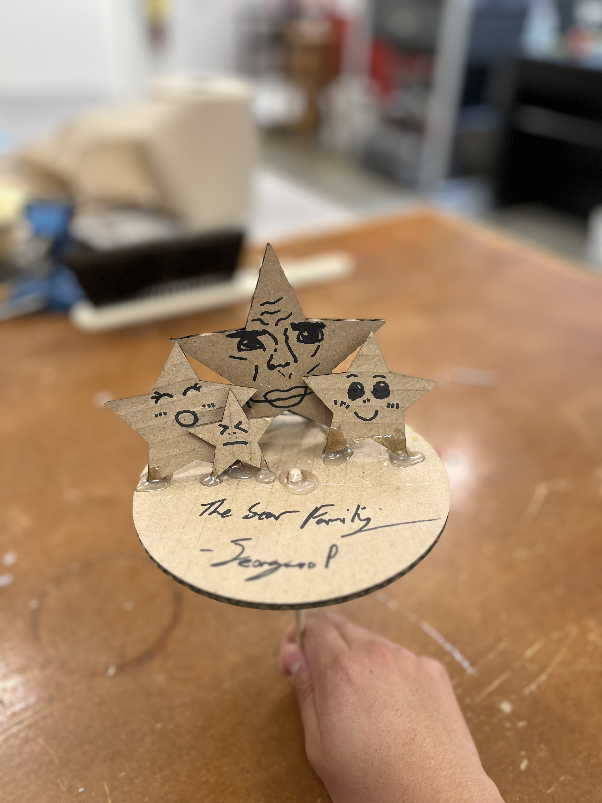

<div class="textcontainer">
<p class="margin"> </p>
<div style="background-color: white; padding: 20px; border-radius: 10px; box-shadow: 0 0 10px rgba(0,0,0,0.1); max-width: 800px;">
<h3>Week 3: Hand Tools and Fabrication</h3>
<h4>Kinetic Sculpture</h4>
<h4 class="mb-4">Kinetic Sculpture: Star Family Sculpture – Fabrication Documentation</h4>
<section id="overview" class="mb-5">
<h5>Project Overview</h5>
<p>
*Disclaimer: Week 3 and Week 4 are pretty much connected to each other. Therefore, some information here can be repeated on the other one.*
For this assignment, I created my own cardboard design of "The Star Family".
It features moving parts controlled by rotation of motor, creating a cool visually pleasing impact of family and stars.
</p>
</section>
<section id="materials-tools" class="mb-5">
<h5>Materials and Tools Used</h5>
<ul>
<li>Arduino Uno microcontroller</li>
<li> Motors (3v)</li>
<li>Laser-cut parts </li>
<li>Wood base as a support </li>
<li>Jumper wires and breadboard</li>
<li>Soldering iron </li>
<li>Power supply (5V)</li>
</ul>
</section>
<section id="circuitry" class="mb-5">
<h5>Circuitry and Electronics</h5>
<p>
The sculpture's movement is controlled by three servo motors connected to an Arduino breadboard The Arduino is
programmed to rotate the motor in one way, making a cardboard plate with star designs rotate around a
center.
<section id="media" class="mb-5">
<h5>Photos and Video</h5>
<p>Here are some photos: </p>
<img src="starfamilybasic.jpg" alt="Star Family Basic" class="img-fluid rounded mb-3" />

<section id="challenges-learnings" class="mb-5">
<h5>Challenges and Learning Reflections</h5>
<p>
During the fabrication of this sculpture, the main challenges were synchronizing the servo movements smoothly and
designing mechanical joints that balanced flexibility and stability. Learning to integrate electronic control
with mechanical design deepened my understanding of kinetic art and embedded systems.
</p>
<p>
Future improvements may include adding sensors for interactive control and experimenting with different materials to
enhance aesthetics and durability.
</p>
</section>
</div>
<script src="../strapdown.js"></script>
<script src="https://cdn.jsdelivr.net/npm/bootstrap@5.0.2/dist/js/bootstrap.bundle.min.js"></script>
</body>
</html>
</div>